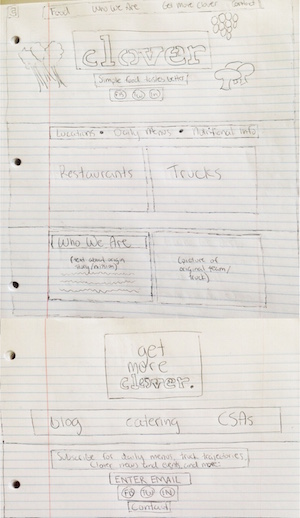

There's a bit of a problem. The vegetarian food truck and restaurant’s website is unreflective of the tone and culture the company promotes in in-person engagements. It needs a refresh to effectively capture attention and align with audience expectations.
So, here's the new goal. In a creative concept, re-envision the site to be an accurate representation of the company’s desired branding, highlighting the value proposition of simple and nutritious local food, and targeting the audience of healthy, active city-dwellers.
After reviewing the current site (pictured below) and diving into those for others operating in similar or related markets, including other local food trucks and vegetarian and vegan establishments, I honed in on the need for a site that more clearly depicts the healthy ingredients Clover uses and the range of offerings the company provides, without some of the additional information currently taking up valuable real estate on Clover’s homepage. I also factored in feedback from user conversations, which addressed frustration with the cluttered nature of the page and the need for greater emphasis on Clover’s specific offerings.

Putting (erasable) pen to paper. This was an initial framework for how I envisioned a landing page developing: calling clear attention to Clover’s mission and highlighting locations and menus, with everything else as an added perk. These are the final wireframes, after iterating on earlier versions based on user feedback for optimal section ordering and additional content to includes as subpages.
After putting concepts in front of additional users, editing some of the navigation and content based on their feedback, and settling on a direction, the final mockup below clearly demonstrates opportunities for the site’s enhancement and optimization. This re-design incorporates a lighter and brighter feel and tone, drawing in the Boston community with a landing page that truly reflects Clover’s vibrant personality and offerings.

Due to the fact that this project was a creative concept only, and not a paid assignment from the client, I was unable to officially implement any of these ideas or make any changes live on the site for testing. However, through user interviews discussing the new design elements, I was able to verify that these updates would be well received within the target audience. Additionally, if I did have the opportunity to launch any updates, I would monitor the results through key performance indicators specific to the priority goals: for example, to measure the user’s ability to locate different pages on the site, I would evaluate Google analytics for bounce rates and user flows to identify disconnects and drop-offs.
Evaluate and revise directions and features as needed based on the pre-established metrics and results.
Rinse. Repeat. Find the way to the solution.